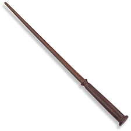

Accio, wand!

Jag hjälper dig att bli bättre än Olivander på att göra trollstavar!
Gör din egen trollstav
Du kommer behöva:
- Kinapinnar (ta ett extra par nästa gång du köper sushi)
- Limpistol och patroner
- Brun färg
Så här gör du:
- Googla fram den trollstav du vill skapa.
- Ta en av pinnarna och se till att det inte har någon stickor.
- Sätt på limpistolen och fyll den med en patron. (OBS lämna aldrig limpistolen utan att dra ut kontakten)
- Låt limmet smälta ner för pinnen så att det blidar..
- När du är nöjd. Låt torka
- När limmet är tort måla brun.
- Börja trolla!
Här kan du se hur jag gör när gör: